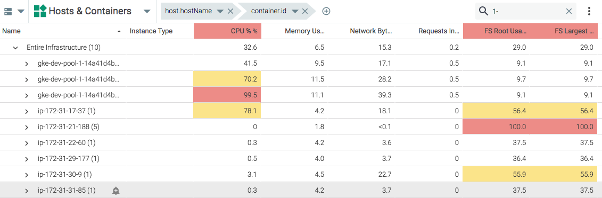
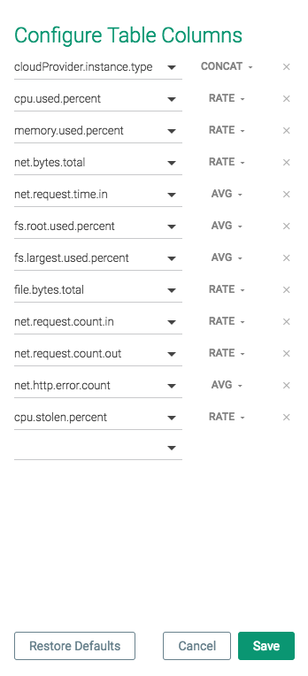
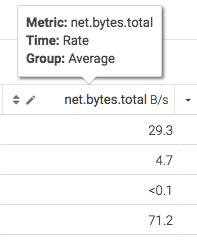
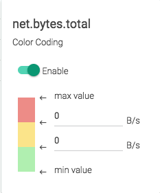
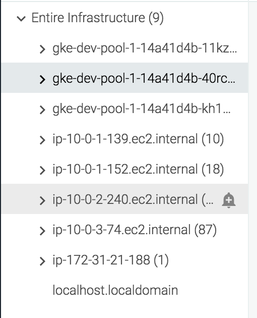
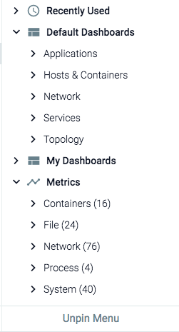
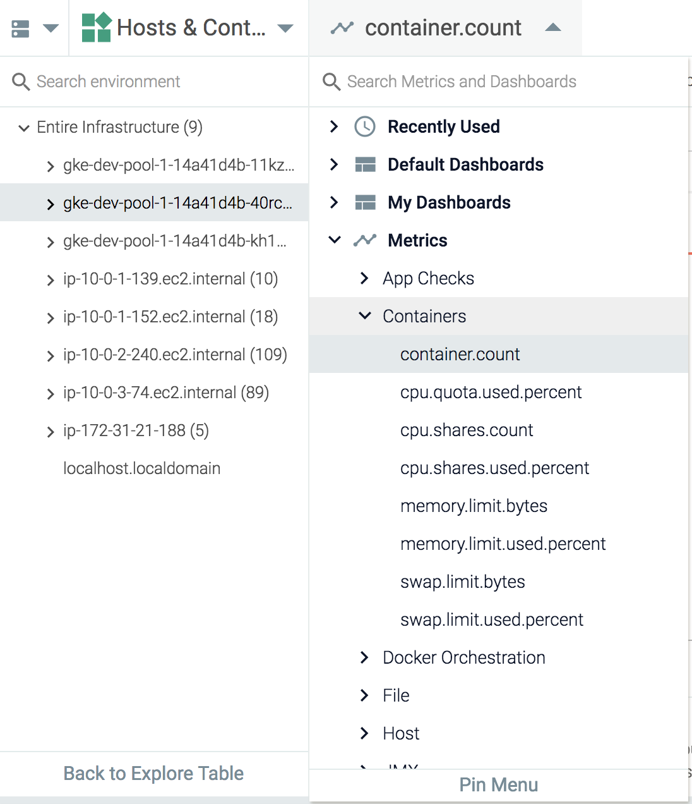
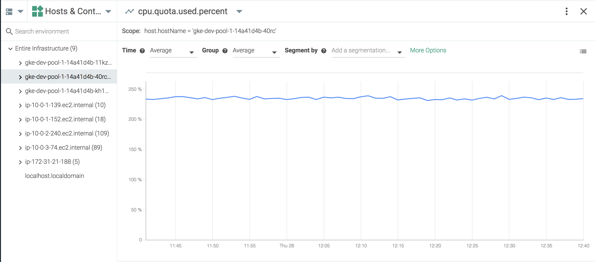

The Explore Table
Data Sources
Switch Data Sources
To switch between available data sources:
On the
Exploretab, click theData Source(two rectangles) drop-down menu:
Select the desired data source from the drop-down list.
Groupings
Groupings are hierarchical organizations of tags, allowing users to organize their infrastructure views on the Explore tab in a logical hierarchy. For more information on groupings, refer to Grouping, Scoping, and Segmenting Metrics.
Table Search
The Explore table search bar allows users to search the current grouping for infrastructure objects, based on partial or full name strings. For example, the search below shows all results that include ip-:
 |
Each result above starts with the search parameters; however, the example below shows that exact name knowledge is not required.
|  |
The results above include all instances that contain 1- in the name, regardless of where within the name it is present.
Table Columns
The Explore table columns each display a different metric. These columns can be configured to display the exact information required for the infrastructure.
Note
Changes to the order of existing columns is persistent across groupings, but not across logins, unless columns are added/removed.
Reorder Table Columns
To reorder table columns:
On the Explore tab, move the mouse cursor over the relevant column header, and press and hold the left button. A thick left wall border will appear:

Drag the column until the border marker is in the desired location, then release the left button to confirm the change.
Configure Table Columns
Columns can be added/removed with the table configuration checklist.
Note
Changes made to the checklist are persistent across logins.
To configure the metric table columns:
On the
Exploretab, click theSettings(gear) icon to open the table configuration panel.Open the metric drop-down menus to add or change metrics, and the aggregation drop-down menus to configure the relevant time and group aggregation:
 Click the
Savebutton to save the changes.
Configure Color-Coding
Table columns can be configured to use colors to highlight values and improve readability of the Explore table.
To configure color-coding for a column:
From the
Exploremodule, click theEdit(pencil) icon for the desired column: Toggle the
Enableswitch. Configure the color values as necessary. The changes are made automatically.
Restore Table Column Defaults
To restore the default metric table columns:
On the
Exploremodule, click theSettings(gear) icon to open the table configuration panel.Click the
Restore Defaultsbutton.Click the
Savebutton to save the changes.
The Drill-Down Menu
Sysdig Monitor users can drill down into the infrastructure by using the numerous dashboards and metrics available for display in the Explore table. These displays can be found by selecting an infrastructure object, and opening the drill-down menu.
Note
Sysdig Monitor only displays the metrics and dashboards that are relevant to the selected infrastructure object.
Pin/Unpin the Drill-Down Menu
To pin the drill-down menu to the Explore tab:
On the
Exploretab, select an infrastructure object: Open the drill-down menu:

Click the
Pin Menulink to pin the menu to theExploretab.
Note
To unpin the menu, click the Unpin Menu link at the bottom of the menu:
|  |
Dashboards
The drill-down menu displays all the available dashboards relevant to the selected infrastructure object. These dashboards are broken into two sections:
Default Dashboardsare those pre-defined by Sysdig Monitor.My Dashboardsare dashboards either created by, or shared with, the current user.
To view a dashboard:
On the
Exploretab, select an infrastructure object.Open the drill-down menu.
Navigate through either the
Default DashboardsorMy Dashboardsdrop-down menus to find the desired dashboard, and select it.
The dashboard will now be presented in place of the Explore table, until the user navigates away from it.
Note
The scope of the dashboard, when viewed via the drill-down menu, is set to the infrastructure object selected from the Explore table.
Metrics
Sysdig Monitor users can view specific metrics for an infrastructure object by navigating the drill-down menu:
On the
Exploretab, select an infrastructure object.Open the drill-down menu.
Navigate through the
Metricsdrop-down menu, and select the desired metric:
The metric will now be presented in place of the Explore table, until the user navigates away from it:
|  |
Note
The scope of the metric, when viewed via the drill-down menu, is set to the infrastructure object selected from the Explore table.